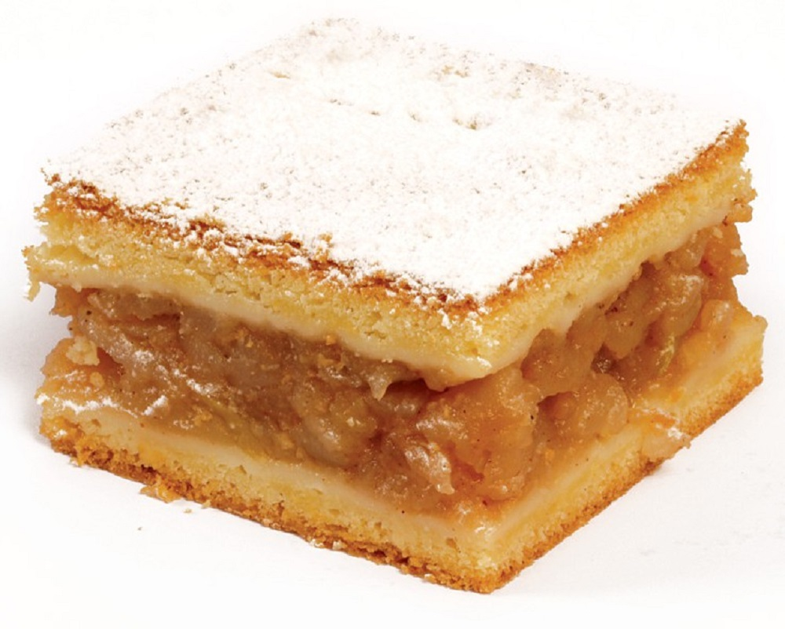

Lazy pita

Description
Lastly, it is time for something sweet. Out of all Serbian recipes for desserts,
this one might be the easiest. In fact, this pie is not just simple — it’s lazy.
To clarify, lenja pita literally means lazy pie. So, if you usually can’t be bothered
to cook anything more complicated than a sunny-side-up — this dessert is perfect for you.
Ingredients
Dough
- wheat flour
- sugar
- milk
- oil
- an egg
- baking powder
Filling
- apples
- sugar
- cinnamon
- vanila sugar
Instruction
- Use a mixer or a hand blender to mix all the ingredients for the dough.
- Grease a baking pan with oil and pour half of your dough mixture in it.
- Place the pan in the pre-heated oven and bake it for 10 minutes at 180°C.
- While the dough is baking, grate the apples and combine them with sugar and cinnamon.
- When the dough is half-baked (after 10 minutes), spread the filling over it evenly.
Then, pour the remaining dough mixture on top of the filling.
- Bake everything for 30 minutes until the crust gets a nice golden color.
- When it’s done, take your pie out of the oven and sprinkle it with vanilla sugar.
Cut it into square pieces and serve.